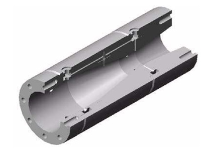

Portfolio



Below are some of the scientific articles I have published throughout my academic and professional career.
- Engineering Design of an Electronic Flow Transducer Based on a Venturi Differential Pressure Device
Tecnologia Magazine, University of Fortaleza, pp. 55–64, 2004. - Venturi meter design oriented by computational simulation: Flow Straightener, throat geometry and fluid influence on discharge coefficient
CONEM 2004 – III National Congress of Mechanical Engineering - Numerical Study on the Effects of Flow Straighteners Geometry and Installation on Upstream Flow Condition in a Venturi Meter
CILAMCE 2003, Ouro Preto – MG, Brazil.
For more information, please use the contact form available in the "Contact" section of this website.